Before attempting to build simulation components and models using Viskit, it is important to have at least an elementary understanding of Discrete Event Simulation (DES) Event Graph methodology. See the references for background. A brief overview of DES and Event Graphs is provided in the appendix.
Henceforth it will be assumed that the reader has knowledge of the mechanics of the DES, including how state variables change value, how events arte scheduled, and how the Event List processes events and advances time.
It is best to start with a very simple example. One of the simplest Event Graphs is the "Arrival Process", a component that has one parameter, one state variable, and one event. This Event Graph may be defined in a manner that is independent of the implementing programming language or even of its Viskit representation.
The Arrival Process is a generalization of the Poisson Process. The differences is that the times between arrivals are allowed to be any arbitrary non-negative values.
Parameter: {tA} = sequence of non-negative interarrival times.
State Variable: N = number of arrivals (initially 0)
Event Graph (Figure 1):
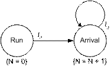
The state variable N is equivalent to the counting process associated with a Poisson Process. Unlike the Poisson Process, however, the interarrival times {tA} need not be independent exponential random variables, but any sequence of non-negative numbers. So this component could be used to represent a Renewal process (if {tA} were to be made an iid sequence of non-negative random variables), a periodically recurring sequence (making {tA} all identical values), or a correlated sequence of non-negative random variables.
Before walking through the building of the Arrival Process component, let us first see what the finished model looks like in Viskit.
Start the Viskit Event Graph Editor and dismiss the Event Graph Properties panel. Select File | Open from the menu bar, navigate to Viskit’s examples directory, select the file "ArrivalProcess.xml" and click "Open." This will open the Arrival Process component in the Event Graph editor, which should look like Figure 2.
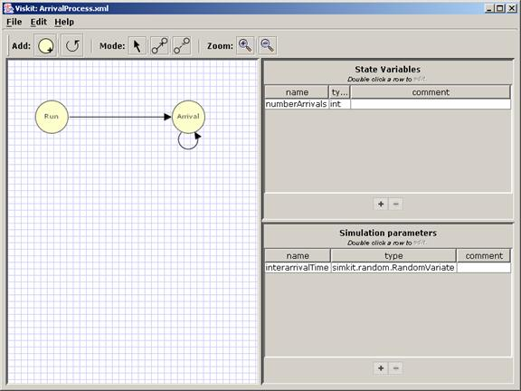
Note the similarity between the abstract Arrival Process Event Graph of Figure 1 and the Event Graph drawing in the left panel of Figure 2. In general, any Event Graph component can be simply drawn as-is in the Event Graph Editor.
[Walk user through the inspectors for parameters, state variables, events, edges, etc]
Let us now walk through creating the ArrivalProcess component shown in Section 2.2. Start by clicking File | New Event Graph. Fill in the Event Graph Properties dialog for the name, package, and (optionally) a comment. It should look roughly like Figure 3 (you may give your component any name and package you wish). Click "Apply Changes" to close the dialog. There should now be an empty Event Graph Editor window. Verify that the name you have given your component is shown on the title bar of the window. If you ever wish to change the Event Graph properties, click Edit | Edit Graph Properties…, which will bring up the dialog box of Figure 3 again.
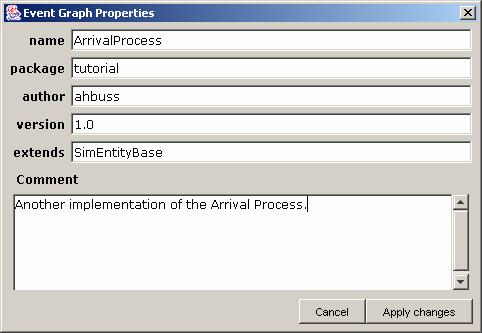
When creating an Event Graph Component initially, it is best to start by defining parameters, then state variables, and finally drawing the Event Graph.
Define the interarrival time parameter by clicking the ‘+’ icon below the "State Variables" panel on the lower right (see Figure 4).
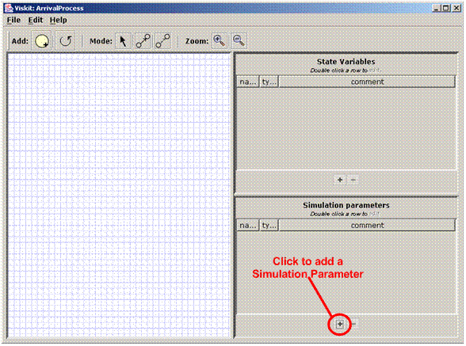
This will bring up a Parameter Inspector (Figure 5) that can be used to define the parameter (later this same dialog can be used to modify the parameter).
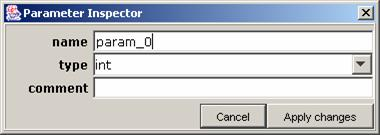
Fill in the name of the parameter, its type, and an optional comment. Since the parameter is a sequence of possibly random values, the interarrivalTime parameter should be defined as a simkit.random.RandomVariate type (Figure 6). You should save at this point (File | Save). Navigate to a directory where you have write privileges and save the file.
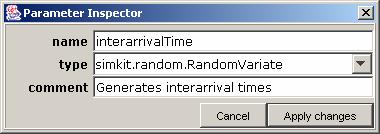
At this point there is not enough of the Event Graph to generate the Java code. However, you can view the XML that has been created so for by clicking File | View Saved XML (Figure 7).
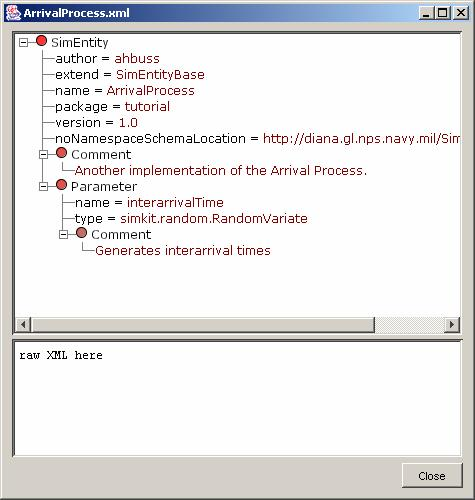
In a more complex model there will be additional parameters to be defined. Before moving on to defining state variables, it is best to continue entering parameters by clicking on the ‘+’ icon and filling in the Parameter Inspector dialog. If you change your mind and wish to delete a parameter, simply select it in the Parameters panel and click the ‘-‘ icon. In that case, a confirmation dialog will ask whether you really wish to delete the parameter.
Next, add the state variable by clicking on the ‘+’ icon just below the State Variables panel in the upper right of the Event Graph Editor window (Figure 8).
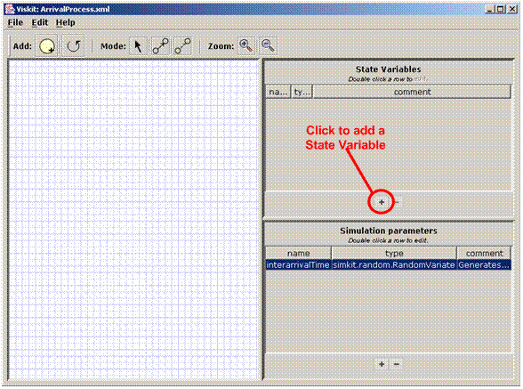
As with adding a parameter, clicking the ‘+’ icon for adding a State Variable brings up a State Variable Inspector (Figure 9).
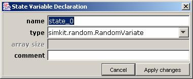
In this case, the RandomVariate type is "left over" from the parameter declaration. For the Arrival Process model, the state variable (numberArrivals) is of type int. Enter this information (Figure 10). Click Apply Changes to go back to the Event Graph Editor window.
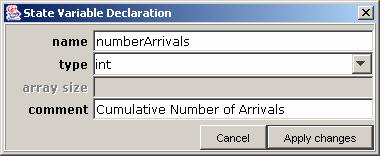
As with parameters, it is best to continue defining all the state variables for a more complex Event Graph component. As with parameters, any defined state variable can be deleted by first selecting it in the panel and then clicking the ‘-‘ icon. A confirmation dialog appears for all deletions.
The final step in creating the component is to draw the Event Graph itself and fill in the information defining the Event nodes and Scheduling/Canceling edges. Start by dragging and releasing an Event node from the toolbar to the Event Graph palette on the left of the window (Figure 11). Do this again to create a second Event node. The Events will be given default names that should always be changed.
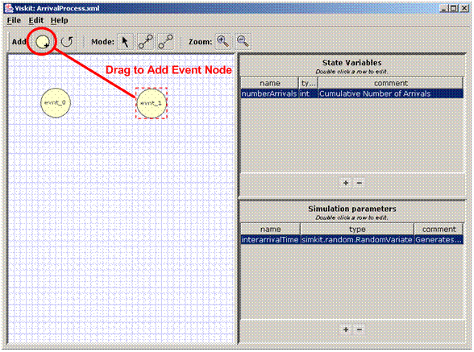
To modify an Event node’s properties, double-click on it to bring up the Event Node Inspector . Double-click the evnt_0 node (Figure 12).
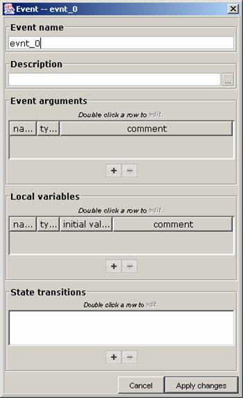
Change the name of the event to "Run." Recall that for Event Graphs, the Run Event is always scheduled on the Event List at time 0.0. The Run Event is responsible for initializing all state variables of the component and scheduling any other non-Run Events at the start of a run, if necessary. The state transition for Run in this case is to set numberArrivals to 0. To add a state transition to an Event, click the ‘+’ icon below the State Transitions panel (at the very bottom of the Event Inspector). This will bring up the State Transition dialog (Figure 13).
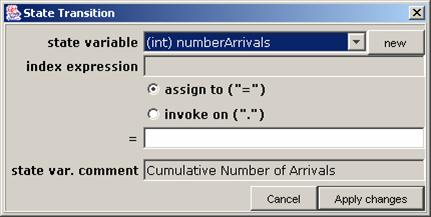
Since state transitions can only be applied to state variables, the "state variable" part of the dialog can only be selected from previously defined state variables. However, if it is desired to define a new state variable, then the user can click the "new" button in the upper right (Figure 13) and the State Variable Inspector will appear for a new state variable definition (similar to Figure 8). Enter "0" for the state transition for numberArrivals (Figure 14) and click "Apply Changes."
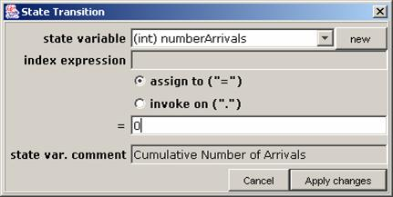
The Event Inspector for Run should now look like Figure 15. Click Apply Changes, and edit the other event. It should be renamed to "Arrival" and its state transition should be to change numberArrivals to "numberArrivals + 1" (as defined in the original Event Graph of Figure 1).
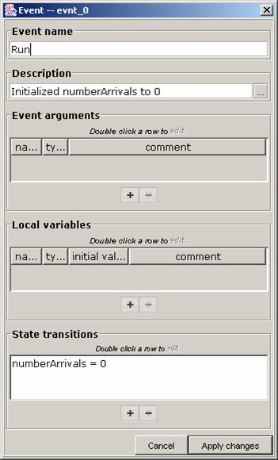
After filling in the state transition and renaming the event, the Event Inspector for the second event should look like Figure 16
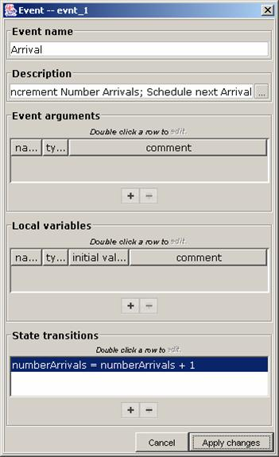
You should save you model at this point. You can also view the saved XML to see how the model is being stored. Note that in addition to Parameter and StateVariable elements, the XML now includes Event elements (Figure 17). Note also that the Event elements contain StateTransition elements that specify that Event’s state transition. In general, an Event element may have as many StateTransition elements as desired.
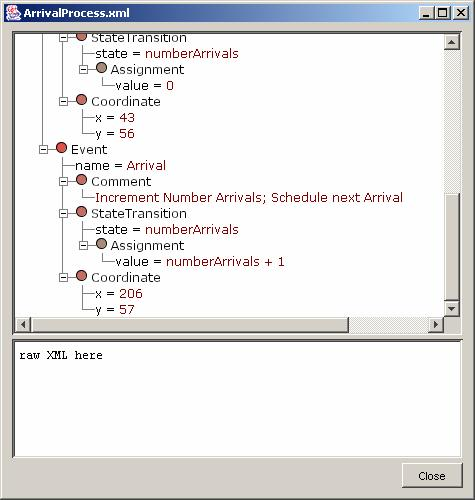
Now that the Events are defined, you can also generate the Java code (even though the Event Graph component is not yet complete). Click File | Generate Java to bring up a window with the corresponding Java code (Figure 18). At any point the user has the option of generating the Java code, saving it (click on the "Save Sourceand Close" button), and modifying the code. However, changes produced in this manner cannot be imported back to Viskit (at this time), so such an action would be a one-way street. Staying in Viskit, the user can check the model by clicking the "Compile test" button.
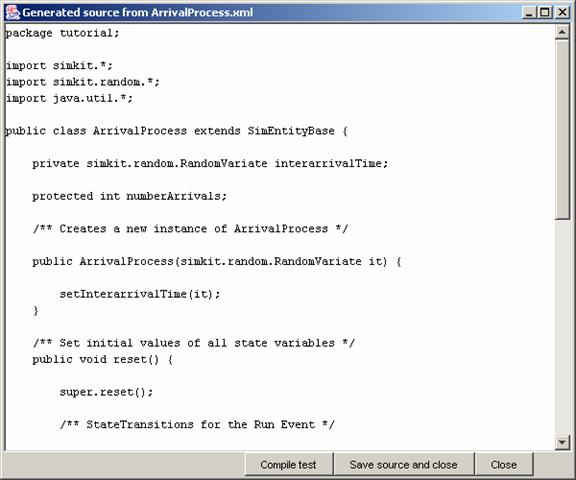
A successful outcome of "Compile test" is shown in Figure 19.
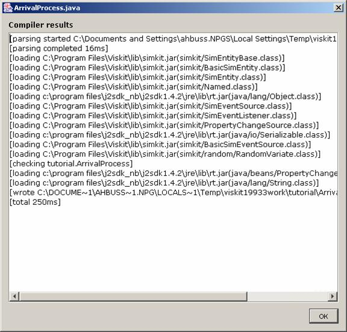
Returning to the main Event Graph window, the final step is to draw and configure the scheduling edges. To draw a scheduling edge, fist go to "Create Scheduling Edge" mode by clicking on the Scheduling Edge Mode icon (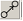, see Figure 20). The Event nodes will be surrounded by a dark square, and when the mouse is over an Event, the cursor will become a hand.
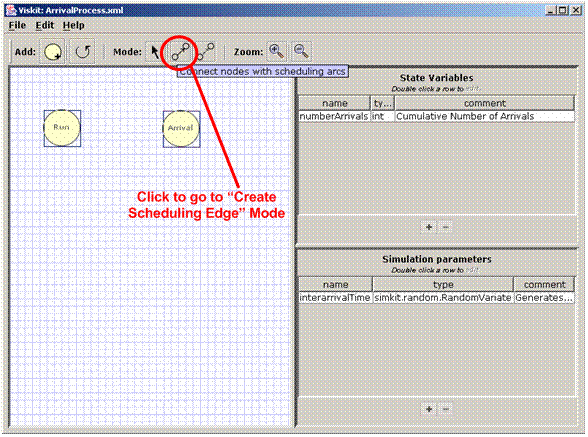
When in this mode, a scheduling edge is created by dragging the mouse from one Event node (the scheduling Event) to another Event node (the scheduled Event). Drawing the scheduling edge between the Run Event and the Arrival Event results in the window looking like Figure 21.
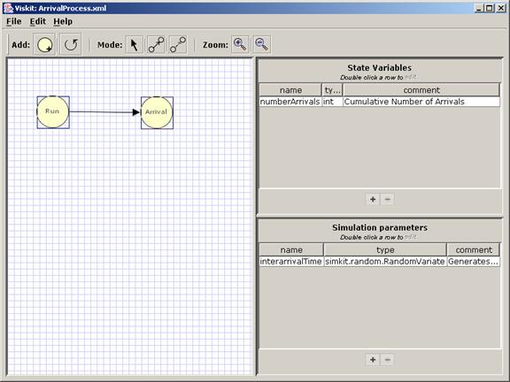
Self-scheduling edges (one of which is needed for the Arrival Event, as shown in Figure 1 and Figure 2) are created by dragging from the Self-scheduling edge icon onto the Event for which the self-scheduling edge is desired (Figure 22). In this case, drag the self-scheduling edge icon onto the Arrival Event to create the self-scheduling edge from Arrival to itself (Figure 22).
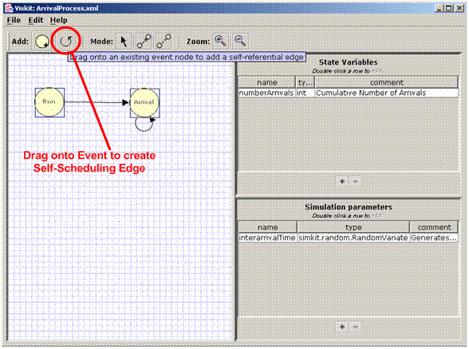
Each edge usually must be edited to enter the necessary information. Double-click on the Run-Arrival edge to bring up its Inspector (Figure 23). The source and target events are determined by the drawing, and so are not editable. Also, although it appears that whether an edge is Scheduling or Canceling can be modified by the radio buttons, in fact they can’t. If a Canceling edge is desired, then it must be drawn separately. Canceling edges will be covered in a later section.
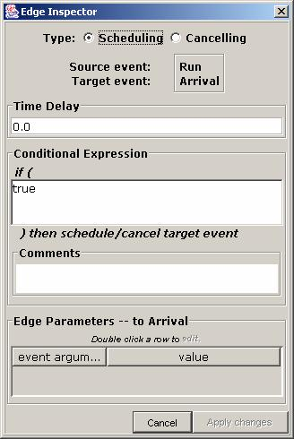
For simple models, only the time delay and the edge condition are typically modified. For this model, we need to enter the delay of an interarrival time. The interarrivalTime parameter was defined as a RandomVariate, which uses the generate() method to generate pseudo-random variates. Therefore, the time delay for this edge is given by interarrivalTime.generate() (Figure 24). Click "Apply Changes" to return to the main Window.
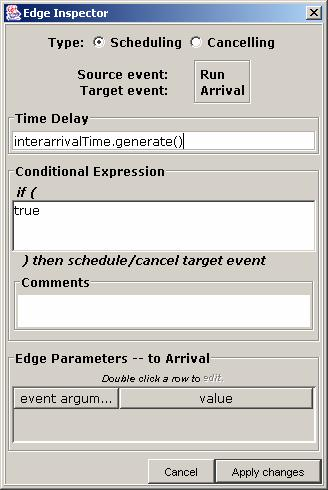
Similarly, edit the Self-Scheduling edge for the Arrival Event by double-clicking on it. Its inspector should appear just like Figure 23 (except that both the Source and Target events are "Arrival"). The delay should be filled in as "interarrivalTime.generate()" just as for the Run-Arrival edge.
The model is complete! Save the model and, if you wish, view the generated XML (File | View Saved XML, Figure 25). You can also generate the Java code and do a compile test.
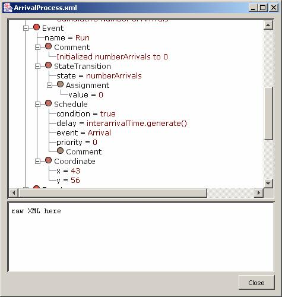
Congratulations! You have created your first Event Graph component. Although this is about the simplest possible Event Graph Component, the Arrival Process is nevertheless a very useful and reusable component. A DES model can be created in the Assembly Editor using only this component, and that is what we will do next.